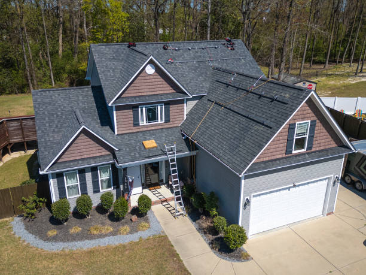

A new roof should feel like a stronger property decision, not just a replacement event.
New roofing in Newark is about performance, appearance, and timing all working together. The system should be planned for the building's future, not just its current problem.
Replacement projects
Ideal when the current roof can no longer support practical repair.
Property upgrades
A new roof can strengthen both performance and the overall look of the property.
Long-term planning
Material selection and installation quality shape the roof's future value.
New roof planning
This kind of page should explain what makes a new roof decision feel worthwhile.
A new roof is not just about replacing old material. It can support better weather protection, improved appearance, stronger property confidence, and a more durable long-term roof strategy.
Design and material direction
Material choices affect maintenance, look, and how the roof performs over time.
Property fit
The roof plan should suit the building type, not just repeat a generic installation approach.

Image section
A darker image-backed section makes the page feel more premium and complete.
This gives the new roofing page a stronger middle section and creates better contrast between planning content, property benefits, and the closing call to action.
Weather readiness
A new roof should prepare the property for future seasons, not just correct old problems.
Appearance and value
Curb appeal and property confidence often improve when the roof looks intentional and well planned.
Longer-term confidence
The new system should feel like a better fit for the property's next stage, not just a quick replacement.
Good fit for
Situations where a new roofing page should say more.
Aging roofs
Older systems often reach a point where replacement makes more sense than continued patching.
Property upgrades
A new roof can support broader exterior improvement or investment planning.
Storm recovery
Some damage patterns push the project beyond repair and into full replacement territory.
Long-term ownership
Owners planning to hold the property often want a stronger long-range roofing solution.

Final call
The page now has enough depth to support a true new roofing decision.
Instead of ending after a short intro, it now explains why new roofing matters, who it fits best, and why a complete replacement can feel like a stronger property move.
Talk About a New Roof